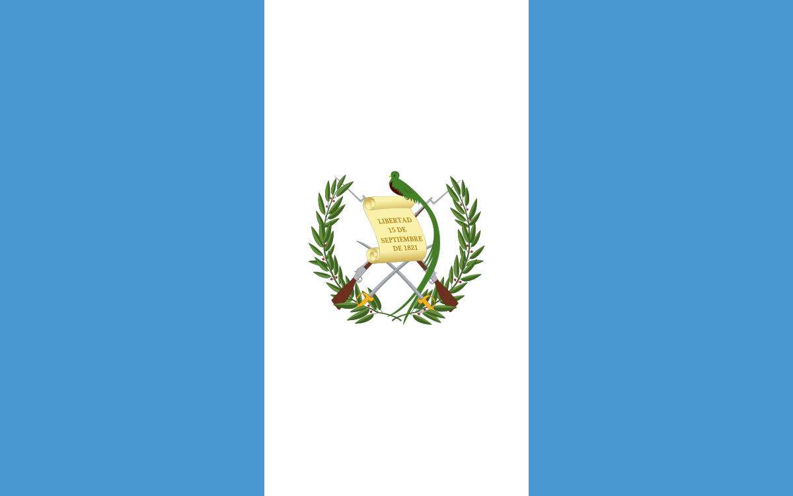
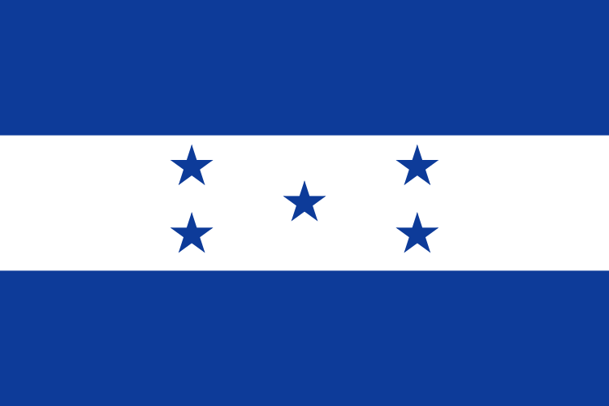
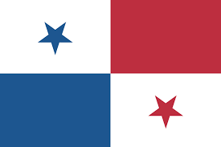

PAÍSES DE CENTROAMERICA
El Salvador

El Salvador, oficialmente República de El Salvador, es un país soberano de América Central ubicado en el litoral del océano Pacífico con una extensión territorial de 21 041 km2. En el año 2015 contaba con una población estimada en 6 377 195 habitantes, siendo el país más densamente poblado del continente americano.
Guatemala
Guatemala —oficialmente, República de Guatemala— es un Estado soberano situado en América Central, en su extremo noroccidental, con una amplia cultura autóctona producto de la herencia maya y la influencia castellana durante la época colonial.
Honduras
Honduras es un país de América, ubicado en el centro-norte de América Central. Su nombre oficial es República de Honduras y su capital es el Distrito Central, formado por las ciudades de Tegucigalpa y Comayagüela
Nicaragua

Nicaragua es un país ubicado en el istmo centroamericano que limita con Honduras, al norte, y con Costa Rica, al sur. Posee costas en el océano Pacífico y el mar Caribe, y en cuanto a límites marítimos en el océano Pacífico colinda con El Salvador, Honduras y Costa Rica; mientras que en el mar Caribe colinda con Honduras, Colombia y Costa Rica.
Panama
Nicaragua es un país ubicado en el istmo centroamericano que limita con Honduras, al norte, y con Costa Rica, al sur. Posee costas en el océano Pacífico y el mar Caribe, y en cuanto a límites marítimos en el océano Pacífico colinda con El Salvador, Honduras y Costa Rica; mientras que en el mar Caribe colinda con Honduras, Colombia y Costa Rica.